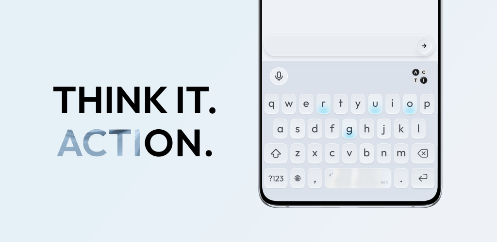
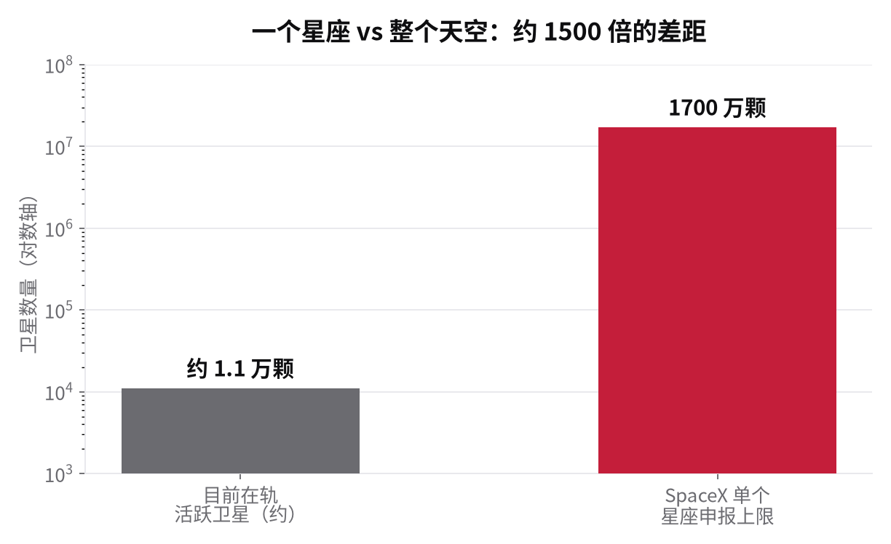
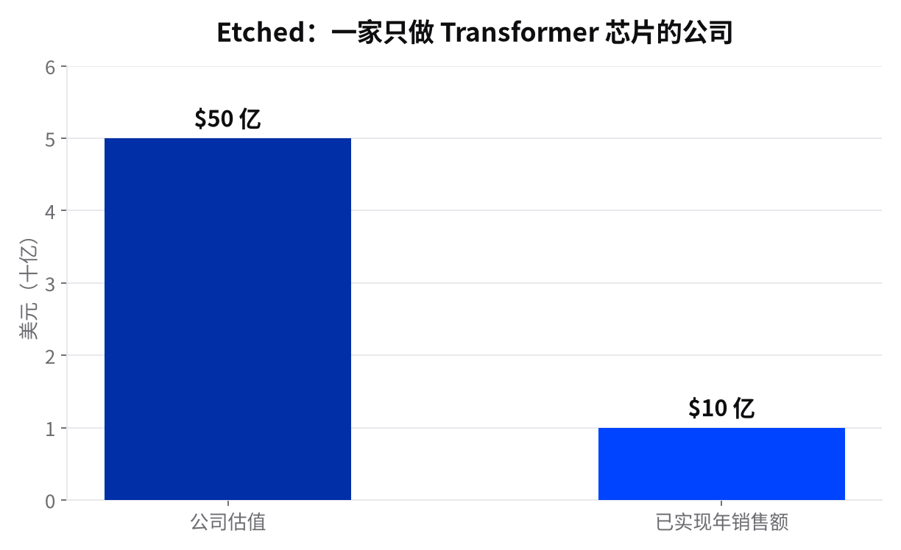
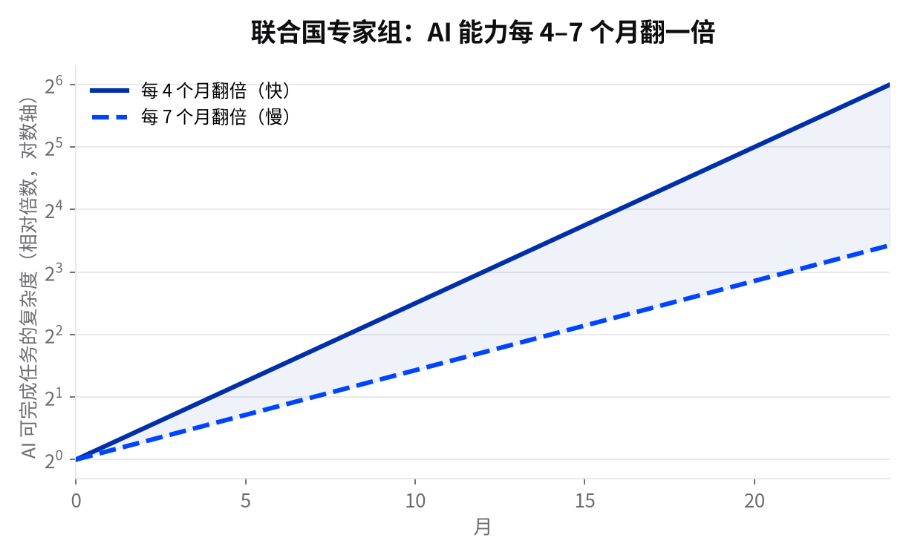

AI 情报日报
今天没有大模型发布，主线是"钱和地盘"：一个坚持不存你聊天记录的 AI 平台成了独角兽、还赚钱；Google 的常驻 agent 爬上了 Mac 桌面；专用推理芯片卖到十亿美元；连 AI 的算力都有人想搬去太空。
一个"不记录你说什么"的 AI 平台，成了赚钱的独角兽
Venice AI 昨天完成 6500 万美元A 轮融资，Dragonfly 领投、Coinbase Ventures 跟投，估值冲到 10 亿美元。更让人意外的数据在后面：它已经盈利了——一季度转正，年化收入超 7000 万美元、300 万用户，成立两年第一次拿外部钱。
Venice 给用户一站式接入 200 多个开源和商用模型，卖点很硬：服务器不记录、不存储你的提问和回答，对话留在你自己的设备上，还拿掉了同类工具里的大量内容过滤。
在别家都在琢磨怎么用你的数据的时候，有人把"不碰你的数据"当成产品本身，还真跑通了商业模式。对在意隐私的个人和团队，这是一个能用钱投票的另类选项。
TechCrunch · techcrunch.com / GeekWire · geekwire.com
Google 那个 24 小时替你干活的 agent，爬上了 Mac 桌面
Gemini Spark——5 月发布的常驻 agent——开始进入 Mac 版应用。第一次能在你的电脑本地跑任务，不再只活在浏览器对话框里。
Spark 是个能后台长期运行的 agent：归总重要邮件、生成排好优先级的待办、在日历上占出专注时间块、整理 Drive 文件，还能把重复动作沉淀成可复用的技能，横跨 Gmail、文档、表格、日历等。这是它今年夏天两次大更新里的第一次。
agent 从"网页对话框"挪到了"你天天用的电脑桌面"，这一步比多一个聊天窗口更接近日常。它值不值得开，取决于你愿意把多少琐事真交给它自动做。
Google 官方 · blog.google / Engadget · engadget.com
把 AI agent 直接塞进手机键盘，打字时随手就能用
一款叫 Acti 的应用把 AI agent 装进了手机键盘本身。它不是另一个 App——它接管你的输入法。
无论你在哪个应用里打字，都能就地唤起 agent 帮你写、改、查、办，不用来回切到别的窗口复制粘贴。等于把助手放在了你手指最常停留的地方。
AI 用不用得起来，很多时候卡在"要不要专门打开一个 App"。把它放进键盘，等于把摩擦降到接近零。这类"藏进现有习惯里"的做法，往往比再造一个入口更管用。

Acti 把 AI agent 塞进手机键盘，打字时随手可用。图：TechCrunch。
TechCrunch · techcrunch.com
四家对手坐下来，一起给"越狱"定一把统一的尺子
所谓越狱，就是用花招诱导模型说出或做出它本不该做的事。过去各家对"这次越狱有多严重"各说各话，没有公认标准。
Anthropic 联合 Amazon、Microsoft、Google 等伙伴，提出一套给"越狱严重程度"打分的行业统一框架。想让不同公司、不同模型之间的安全问题能放在同一把尺子上比较。
竞争最激烈的几家在安全评估上罕见地想统一口径。有了共同的尺子，模型到底安不安全才有可比性，你我作为用户才有据可依。
Anthropic 官方 · anthropic.com
Fable 5 回归，但这次不是原样回归——它被装了"安全路由"
Anthropic 官宣 Fable 5 回来了。但细节比标题更值得看：更新后的网络安全防护会部分请求直接路由到 Opus 4.8，生物与化学分类器"仍然过宽"，意味着监管接口还没完全放开。这不是一次干净的回归，是一次带安全闸门回归。
回归立刻传导到整个工具链：Cursor 说 Fable 5 在其评测里领先、但单任务成本最高；Devin 在 Cloud/Desktop/CLI 全线接上；Perplexity 把它重新设为编排模型；Anthropic 同时重置了用户的速率限制。一天之内全线就位。
更有信息量的是社区的反应方式：没人再迷信单模型。Theo 的做法是 Fable 只用于高价值推理与规划，实现、验证、操作电脑交给别的模型，端到端 PR 产出率大幅提升。Remote Labor Index 上 Fable 5 拿到 16.10%。"哪个模型最强"的问题正在变成"怎么组合才最强"。
Latent Space / AINews · latent.space
Together AI 融 8 亿美元：开源模型的"推理通道"正在被资本加厚
Together AI 完成 8 亿美元 C 轮融资，估值 83 亿美元。这家公司不做模型，专做开源模型推理平台——GLM、Llama、Qwen 这些开源权重，很多人的第一反应都是跑在 Together 上。
它的涨价节奏像一面镜子：成立 3 年估值从 10 亿级爬到 83 亿。背后是 开源模型从"能跑"到"好用"的通道生意被重新定价——模型开源了，但让千万人低延迟、低价格地用起来，需要专门的基建，这门生意正在被资本重估。
同一天 vLLM 给 GLM-5.2 加了 DSpark 投机解码预览（约 1.5 倍解码提速），GitHub Copilot 首次接入开源代码模型。开源推理链条上的每一环都在同步变粗。
当闭源模型打价格战，开源阵营选择把"跑模型的路"修得越来越宽。
Latent Space / AINews · latent.space
xAI 上线"语音 agent 搭建器"，让你自己拼一个会说话的助手
Voice Agent Builder——基于 Grok 模型自己配置、组装一个能听会说的语音 agent，不用从零写语音链路。它跟 xAI 最近连推的一系列开发者工具是一条线：把"造 agent"的门槛往下压。
语音正在从"念稿机器人"变成能真办事的入口。对做客服、做硬件、做小工具的人，自己拼一个语音 agent 的成本又低了一截。
xAI 官方 · x.ai
有人想把 AI 的算力搬去太空，代价是我们头顶的星空
天文学界发出警告：SpaceX 计划到 2028 年发射超过百万颗卫星，其中一部分要充当在轨的数据中心，为 AI 提供算力。
天文学家担心如此密集的卫星会显著抬高夜空亮度、在长曝光影像上留下大量划痕。干扰最大的是即将大规模巡天的新一代地面望远镜。
AI 的胃口正在从地面数据中心往天上延伸。这不只是抽象的能耗数字——它可能改变你抬头看到的那片星空——一个能被普通人肉眼感知的代价。

对比示意：一侧干净星空，一侧卫星轨迹密布。AI 算力上太空的代价，可能由每个人的夜空来付。
Euronews · euronews.com
只为一种模型结构造的芯片，卖出了 十亿美元
英伟达的挑战者 Etched 估值达到 50 亿美元，芯片销售额突破 10 亿美元。
Etched 走的是一条窄而深的路：电路只为 Transformer 这一种模型结构做死了设计，换来的是跑这类模型时更快更省。相比通用 GPU 什么都能算，它牺牲了通用性换效率。
这是对"通用芯片包打天下"的一次正面挑战。如果专用芯片能持续兑现性价比，推理成本的下降就不只靠英伟达一家说了算——这最终会体现在你调 API 的账单上。

通用芯片像瑞士军刀——什么都能干；专用芯片像手术刀——专一换速度。图说了算。
TechCrunch · techcrunch.com
"我们在优化自由，真正把用户当成年人对待——这年头，我觉得很少见了。"
Erik Voorhees · Venice AI 创始人兼 CEO · techcrunch.com
"从安全角度看，让世界进入下一阶段、每个人都被持续监视，这其实非常危险。"
Erik Voorhees · Venice AI 创始人兼 CEO · techcrunch.com
今天的主线，不是模型，是边界在动。
一：隐私可以当产品——Venice AI 用"不记录你的对话"跑通了独角兽模式，说明隐私不是成本，可以是卖点。
二：agent 在从网页往桌面和键盘搬家——Google Spark 上了 Mac，Acti 塞进了输入法。入口越浅，习惯越深。
三：算力在往外走——专用芯片做到十亿销售额（Etched），太空数据中心准备好牺牲星空（SpaceX 百万卫星），AI 不再只跟地面 GPU 绑定。
四：行业在给安全定统一尺子——Anthropic + Amazon + Microsoft + Google 联合推出越狱严重程度打分框架。
五：能力在加速——国际科学家小组给联合国的报告指出，AI 能处理的任务复杂度大约每 4–7 个月翻一倍。今天你觉得"它还搞不定"的活，可能下一个季度就变了。

AI 任务复杂度翻倍曲线：每 4–7 个月翻一番。今天觉得"还搞不定"的活，下一个季度可能就变了。来源：独立科学家小组提交联合国的 AI 预警报告。

Mont Saint-Michel Bay, France · 48.62°N, 1.54°W
看了一天 AI 的新闻，地球上还有不需要 GPU 冷却的地方。山川湖海，让我们保持好奇、继续探索。